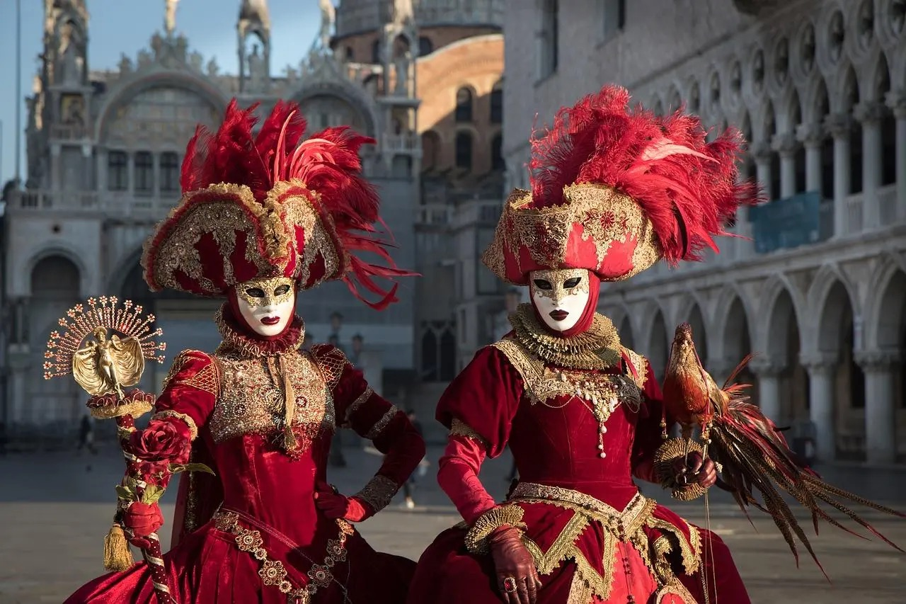
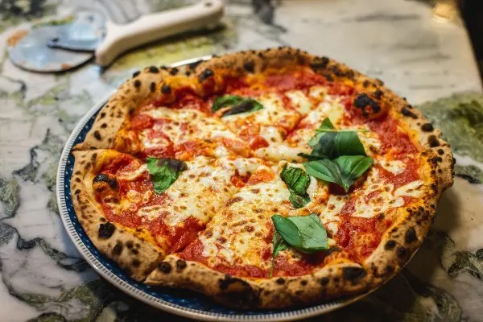

A picture of culture
🇮🇹 You can feel the strong traditions and happy energy of Italian life. Families often meet and talk together. Fashion is important. Every moment feels special.

Delicious food
🍕 Enjoy pizza, pasta, and ice cream. They are made with fresh food and lots of love. Italian food is loved all over the world.

Art & Enduring History
🏛️ Italy has a long history. You can see old Roman buildings and beautiful art from the Renaissance. Italy is like a big museum.

Famous places
🏛️ See amazing places in Italy like the Colosseum, the canals in Venice, and the small streets in Florence. These places show Italy’s great history.